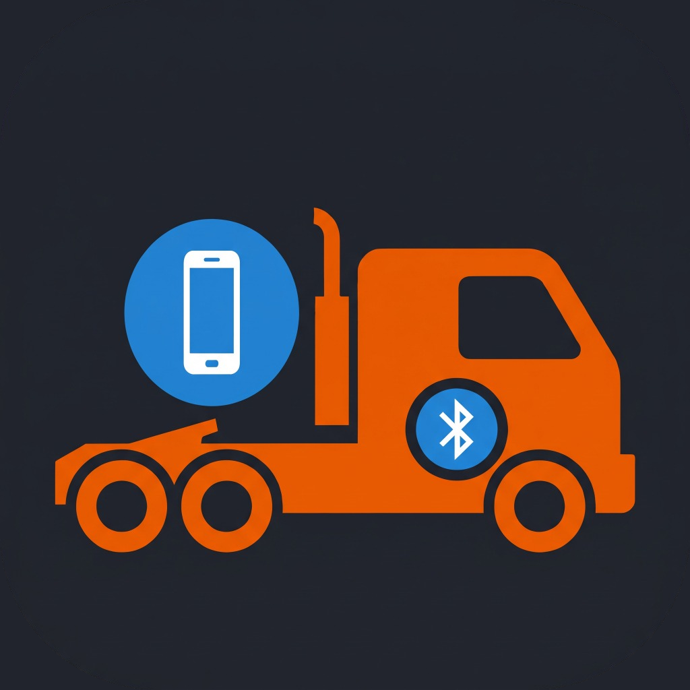

한눈에 보는| 메뉴 | 기본값 / 설명 |
|---|---|
| 예열 시간 | 기본 8초 (1~15초 조절) |
| 시동 시간 | 기본 0.9초 (0.5~4.0초 조절) |
| 비상 정지 | 기본 안함 (고장 무전압 시 1분~1시간 자동 정지) |
| 오일 교환 | 기본 10만KM (5만~15만KM 주기 설정) |
| 기름 탱크 | 기본 200L (100~500L 용량 설정) |
| 연비 설정 | 기본 3.2L (1.0~6.0L/h 시간당 소비량) |
| 음성 안내 | 기본 켜짐 (여성 보이스 안내 켜기/끄기) |
| 운행 기록 | 최근 50건 날짜·가동시간 자동 저장 (폰 보관) |
| 사용 설명서 | 최신 모바일 웹툰형 사용 설명서 열기 |
| 장비 변경 | 저장된 발전기 해제 후 다른 발전기에 연결 |
아니요! 발전기는 절대 꺼지지 않고 정상 가동을 유지합니다. 상단에 빨간 끊김 배너가 뜨고, 가까이 가면 자동으로 다시 연결됩니다. 예약해 둔 자동 꺼짐 시간도 보드가 기억해서 제시간에 꺼줍니다.
기판 박스의 전투기 스위치(모듈 전원 스위치)를 내리거나 발전기 본체의 수동 정지·연료 밸브로 즉시 정지할 수 있습니다. 전투기 스위치를 내리면 대기 중이던 시동 예약도 100% 안전하게 취소됩니다.
휴대폰 상단 바를 내려 블루투스를 켜신 뒤 다시 [연결하기]를 눌러주세요.